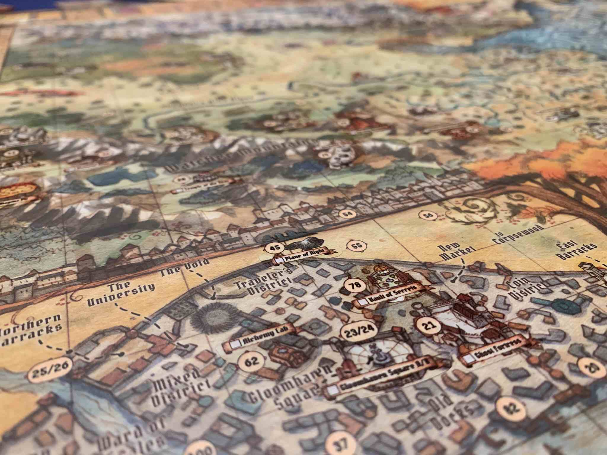
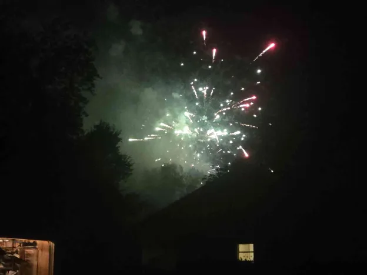

Wait, You Play Gloomhaven Competitively?
(10 min. read)

A few months ago I was at home, restless and just itching for an argument. Maybe the urge to fight came form too many boring days at work or some deep desire to go to war. Either way my prayer was answered when I saw two friends of mine playing Gloomhaven in a Discord call. Gloomhaven–Perfect! Not only do I have issues with that game, it’s also an incredibly popular game so by ripping it apart I can maintain my contrarian status! So, like a hero, I join the Discord call and hijack the conversation toward me hating on Gloomhaven.

One of these friends has Gloomhaven as his absolute #1 favorite game of all time, so he took a lot of exception with my criticisms. Two hours later neither of us convinced the other they were wrong, go figure, but I did learn something I did not expect at all: this friend which plays Gloomhaven irl with a different group, plays the game entirely different than my group did. I’d go as far to say the culture of play in my vs their group was so different it would be very hard for a player from one group to play at all with the other. There would just be a lot of culture clash between styles of play.

For context, Gloomhaven isn’t a very complicated game conceptually. This is not the sort of game you’d expect to have very different cultures of play around it. It’s a skirmish game about Dungeons & Dragons-like heroes fighting monsters. You do your little fights read a paragraph of text, then move onto the next fight; rinse and repeat. One fight might be against some slimes in a cave. Then after you win you read “the cave leads down into an ancient city, where the wizard who made these slimes live.” And for the next fight you’ve teleported to the top of a wizard tower. You get it.
The game is just players working together to win a string of self-contained fights. The game does add one tiny hiccup to this formula: any XP you gain and any treasure you find is yours to keep. So rewards are not split evenly among the party. So, while everyone wants to win the conflict, every player wants to win the combat while taking as much of the rewards for themselves as possible. You’re on the same team as your fellow players, but you don’t work together 100% of the time.

The reason players will work against the interest of the group for XP is mostly because leveling up is fun. It’s fun to pick out a new upgrade to optimize your build, and it’s fun just to get more powerful. The fantasy of getting more powerful over time powers like 80% of AAA video games nowadays. It's a powerful incentive. But there’s actually one more giant incentive in Gloomhaven that gets you to betray your friends: when your character reaches max level, you unlock an entirely new character just for you that no one else can use; you get a shiny toy all to yourself. My friend told me people in his group would often put winning the scenario in mild jeopardy if it meant they could get more XP because they want to see what the new character they unlock is. The siren song of new content lures players into acting selfishly.

Apparently that’s how the game is supposed to work, but this is where the divide between my and my friend’s group comes from because my group does not play that way at all. My group never fights each other for gold/XP. We work together to distribute gold/XP to the people that can use it best. If one person needs mobility we coordinate the fight to make sure they get the Charged Boots. If someone is about to unlock a powerful ability we all help to make sure they get their XP. It’s not uncommon for one player to end up with no gold/XP at all because they were trying to help another character as much as possible. We play the game entirely cooperative without the competitive elements my friend’s group has at all.

When we were playing full cooperative there was one rule that always felt really out of place to us: there’s a rule that after a battle is over players are forbidden from trading items with each other. We all recognized this rule is there for balance reasons, but it felt like it clashed with the story being told here. Here I am jumping in front of cannons and getting stabbed just so my friend can open a treasure chest, but if I happened to get some extra leather from a chest I would never just give it to him so he can make some shoes—don’t be ridiculous. It’s possible we were supposed to use this rule as an indicator to be competitive with each other but we just assumed it was some sub-par design instead of an indicator of how we should act.
Different Incentives

Two groups read the exact same rulebook, and played completely differently. One group is motivated by winning the scenario at all costs, while the other group wants to get more powerful and unlock new content. But at the end of the day, neither group actually misread how any rules work. Everything was played according to the letter of the law, no rules were broken. The two groups just came to different conclusions about the spirit of the law. And that difference in interpretation leads to two very different experiences at the table, with different sets of incentives: a selfless teamwork experience vs cutthroat always help yourself experience. The rules in this game are almost like a Magic Eye Picture every group sees a different set of incentives when they look at it.

This is a big deal, if different people can read the same rules and interpret different incentives that has huge ramifications on the game. Players agreeing on incentives is probably the single most important thing in any game. This example here with Gloomhaven is ultimately harmless but it easily could not have been. This is like the failsafe not kicking in during a nuclear meltdown test; sure nothing happened this time but it could have been such worse. Consider a basketball game where teams disagree on incentives. One team is playing normally but the other team just wants to score as many points as possible not caring about what the other team scores. The two teams might technically be able to play a game, but it’s hard to say that game would be satisfying with one team completely disregarding defense. I imagine the all-offense team would actually get upset at the other team for burning clock by passing instead of just scoring right away. Both teams would get frustrated and no one would leave happy.

I imagine some folk reading this are very confused. “The goal of Gloomhaven is to win, both of the groups agree on that at least, what’s the problem here?” Well, no. Of course the goal of the game is to win, but it’s reductive to say that’s why people play. Why do you pull Gloomhaven off the shelf instead of Catan? There’s some reason you are playing this game besides winning. You might be playing to feel the satisfaction of getting stronger, or you might be playing because you want to unlock all the content and see everything in the box. Or maybe you just want to build a cool combo of abilities. I bet the euro game crowd loves this game for the combos and synergies.

Those are all valid reasons to enjoy a game beyond winning: leveling up, new stuff, and making combos are very fun. Clearly my friend’s group found those to be the most important parts of the game because they played in a way that prioritized it. But my group did our calculus on fun a little differently, what we thought was that winning a difficult scenario was the most fun, progression be damned. We just wanted to face as difficult of a challenge as possible and come out on top. To do this we played on a harder difficulty than my friends group did. We were often in danger of losing a scenario if we didn’t work together. The fun part of the game for us is that moment of “oh no we are going to lose” and then we manage to win anyway. I personally would take winning a difficult fight over a new character any day of the week. There was one other massive incentive that was tipping the scales for my group.
Fear of Losing

Because we were playing on such a high difficulty my group actually had a serious fear of losing my friend’s group did not. And let me tell you what: by far the absolute worst thing that can happen to you in Gloomhaven is to lose a fight. It’s not like you are heavily punished for losing with heavy penalties. It’s actually much worse: the game doesn’t do anything if you lose a fight. It just resets everything and asks you to try again: after you just got done playing out a 2 hour fight.
Variety is the spice of life in these scenario based games, redoing the same one when there's literally 40 more still in the box you haven't seen yet feels awful. Actually ending a fight on a loss is by far the worst feeling in a night of Gloomhaven. It feels like such a waste of time redoing the same fight again often with only a slight change in tactics– stuff like kill the minions instead of the boss first. Once you realize the optimal strategy it’s often very trivial to just redo the fight, but doing things right this time.

My group wants to have losing on the table to get that feeling of satisfaction, but doesn’t want to actually lose. And we certainly don’t want to lose a fight because someone was greedy and went for the treasure instead of killing enemies. If someone from my friend’s group came over and started acting like that we would probably consider them a jerk and not want to play with them again. Even if some players might like to unlock new abilities and characters, prioritizing that is soured by how bitter losing a scenario is. If in a player's mind unlocking new characters and winning a hard challenge are about equally desirable, the bad feelings from potentially losing would fully tip the incentives into winning a hard challenge.

Aside about "Pretending you Won"
Losing in Gloomhaven feels bad, it feels bad enough that many groups often to just skip scenarios they lose instead of retrying the fight. That’s a valid way of playing the game I guess but it doesn't take a genius to see why it’s unsatisfying. Certainly everyone would prefer their victories were “earned” but the damage skipping a lost scenario also damages the narrative being told. Gloomhaven is just a string of fights with a loose narrative connecting them but just skipping a lost fight shines a spotlight on that fact. Yeah sure we all know it’s a disconnected string of fights but you shouldn’t just come out and say it. And frankly, I think it’s unnecessary to have this situation at all. Don’t make the mistake of thinking the game has to work like this: it doesn’t. There are many solutions to this problem that would not require nearly as much work as you’re imagining.
For one the story could’ve just been written from the start to fit the mechanics. The videogame Pyre did this well: the story does not branch based on decisions, but individual character arcs are affected by wins/losses. The large story will always play out the same, but it will have a different texture based on player choice and performance in the fights. This can mostly be small bits of dialogue you read differently based on how a fight went. Or just do what Warhammer does and make the universe so big any potential scenario is always canon, essentially making every fight into a little vignette with implied connection to the larger story.

A more straightforward solution that doesn’t require re-writing the story would be creating a mechanic that tracks wins/losses. Maybe every loss adds a "Doom" to the town and if the players hit 5/10/15 doom there's an optional scenario to undo the damage. You could even give a unique ending for players who fail a doom scenario. I believe some good writing could make the Doom endings at least as compelling as the main ending. Ultimately my point is “pretend you won” is a bad solution to a fixable problem.

Tinkering with Incentives
Players come to games trying to win, but seeking something else. And exactly what you want out of a game can shape how you play. I’ve detailed how my group came to our playstyle, but here’s a hypothetical: if Gloomhaven did have the Doom system I just described, would my specific group play differently? Personally, I think at least some of us would switch from win-at-all cost to greedy gamers, and our table would be to reconcile our now different objectives.

Ultimately the reason everything is so muddled in Gloomhaven is because the game offers all these different reasons to play (advancement, winning a hard challenge, etc) A more straightforward game wouldn’t have these problems. Take a more traditional cooperative game like Pandemic; it’s not like people play that build combos or unlock new content. Even in Pandemic Legacy when new content is unlocked it’s not tied to one player, the whole table gets to use it. The things people play Gloomhaven for simply aren’t present in Pandemic, so there are not multiple incentives that can muddy the waters. Players come to Pandemic to beat a challenge and engage in teamwork, and that’s it. Gloomhaven has those aspects, plus personal advancement and combos.
This all got my brain turning. I had a ridiculous idea to do what Gloomhaven did with it’s unclear incentives, and did it on purpose. I could make a set of weird win conditions, and depending on what players choose, it would say something about what they value as players. The game is a literal Rorschach Test where the way you react to it is a mirror into your own brain. And wouldn’t it be really fun if this extremely experimental game was a rules variant for Wingspan.
This Gloomhaven rulebook is like a Rorschach Test for these two groups. (Could I do this on purpose? Make a rulebook that actually tries to be a Rorschach test? Skip to the end of the post for a pdf)

(click here to learn about Summon the Star: A Coop Variant for Wingspan)